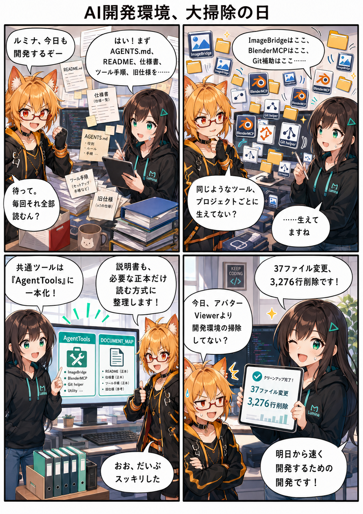

AI開発環境を大掃除！ ツールとルールを一本化した日
今日はアバターの新機能ではなく、その新機能を作るための「開発環境」を大掃除しました。増え続けたAI向けの説明書と補助ツールを整理し、ルミナたちが必要な情報へ迷わずたどり着ける土台を作る回です。

毎回、全部読むの？
ChatGPTやDevSpaceのようなAIエージェントにプロジェクトを手伝ってもらうときは、「この形式が現在の正本」「このフォルダは触ってよい」「この操作にはこのツールを使う」といったルールを文章で共有します。
開発が進むほど、その説明も増えていきます。VR Avatar Viewerではアバター形式、背景形式、Unity固有ルール、キャッシュ配置、変換処理、Blender連携など扱う範囲が広くなり、AIが作業開始時に読む文書そのものが大きくなっていました。
ろひ「毎回それ全部読むん？」
ルミナ「全部読むより、必要な正本へ案内してもらった方が速いですね」
巨大な説明書を「案内板＋専門書」に分けた
期間内のコミット f998ae55 では、AIが常時読む AGENTS.md を最小限のルールへ整理しました。代わりに、新しい案内役として Docs/Agent/DOCUMENT_MAP.md を追加し、Unity固有ルールは UNITY_RULES.md、プロジェクトのディレクトリ方針は PROJECT_STRUCTURE.md へ分離しています。
考え方はシンプルです。最初から百科事典を全部読むのではなく、まず案内板を見て、その作業に必要な専門書だけを開く方式へ変えました。
この整理だけで12ファイルが変更され、710行追加・1,075行削除。文章を消しただけではなく、VAB 4.5やVBG 2.0など「今どの仕様を正本として扱うのか」も、参照先をたどりやすい形へ整理しています。
ツールもプロジェクトごとに生えていた
もう一つの問題が補助ツールです。画像をChatGPTとローカル間で渡すImageBridge、Blenderを操作するBlenderMCP、Git作業を助けるGit Helper、Codexの動作モードを切り替える補助機能など、AI開発を支える道具が増えていました。
これらが各プロジェクトの中に重複して置かれると、どれが最新版なのか分かりにくくなります。そこでコミット d17f77d では、共通ツールの正本を H:\codexapp\AgentTools に集約しました。
VR Avatar Viewer側に残る Tools は、従来の呼び出し方を壊さないための互換ランチャーへ変更。つまり「本体は一か所、入口は今まで通り」という構成です。旧ツールのソースZIPも整理され、このコミットでは25ファイル、115行追加・2,201行削除となりました。
3,276行減った。でも機能を削った日ではない
今回の集計期間全体では、37ファイル変更、825行追加、3,276行削除でした。数字だけを見ると大胆な機能削除に見えますが、中心は重複していた説明や補助ツールの整理です。
アプリ本体の新機能を増やしたわけではありません。その代わり、「AIがどの仕様を読むか」「共通ツールはどこにあるか」という判断を単純にしました。開発環境の迷いを減らすことは、今後の実装速度だけでなく、古い仕様を誤って採用する事故を減らすことにもつながります。
同じ集計期間に進んだその他の変更
今回確認できた期間内コミットは、この文書整理とAgentTools共通化の2件です。VR Avatar Viewer本体について、同じ期間に新しいランタイム機能追加や不具合修正として確定できるコミットはありませんでした。
集計終了時点の最終HEADは d17f77d179fa9461081f1350447f3149407171f6（「AgentTools共通化と互換ランチャーを整理」）です。
4コマの裏話
4コマでは、仕様書やREADMEが机を埋め尽くし、ImageBridgeやBlenderMCPまでフォルダから増殖しているように描きました。実際にはもちろん物理的に書類が積み上がったわけではありませんが、「AIへ渡す情報と道具が増えすぎると、それ自体の管理が仕事になる」という今回の状況を視覚化しています。
3コマ目の AgentTools と DOCUMENT_MAP が今回のポイントです。道具の正本を一か所へまとめ、説明書は必要なものだけ選んで読む。掃除というより、開発環境の交通整理に近い作業でした。
ろひ「今日、アバターViewerより開発環境の掃除してない？」
ルミナ「明日から速く開発するための開発です！」
今日のまとめ
AGENTS.mdを常時読む最小ルールへ整理DOCUMENT_MAP.mdを入口に、必要な正本文書だけ読む方式へ変更- Unityルールとプロジェクト構造の説明を専用文書へ分離
- ImageBridge / BlenderMCP / Git Helper / Codex Modeの正本を
AgentToolsへ共通化 - VR Avatar Viewer側の既存入口は互換ランチャーとして維持
- 集計期間全体で37ファイル変更、825行追加、3,276行削除
本日のひとこと
開発はコードだけじゃない。明日迷わないように、道具箱と説明書を片付けるのも立派な開発だ。
今日は画面上で見える新機能は増えていません。でも、次の機能を作るルミナたちが迷う時間は減りました。VR Avatar Viewerの開発を続けるための「足場」を、一度きれいに組み直した一日でした。